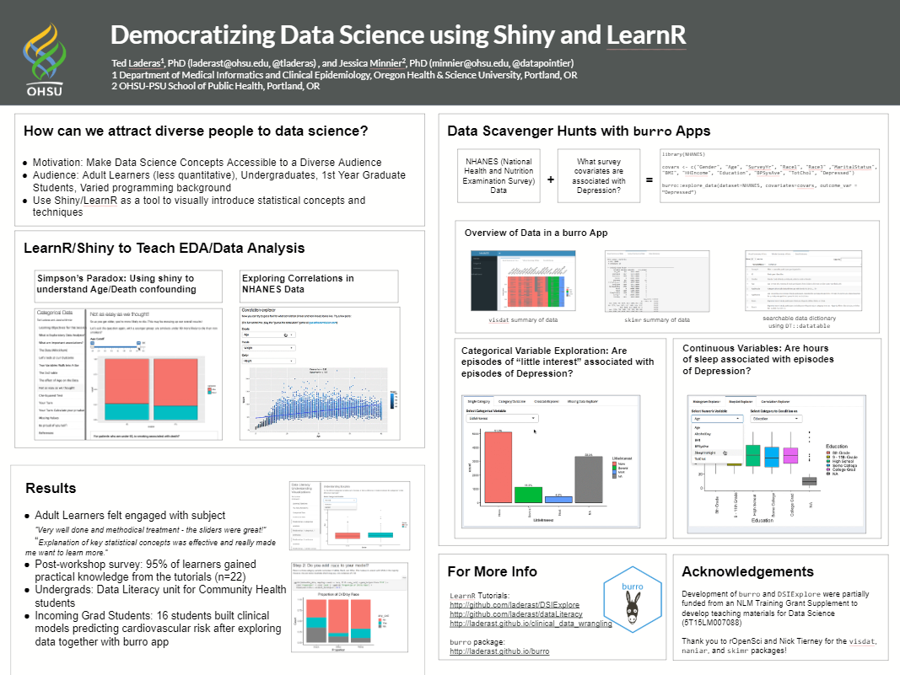
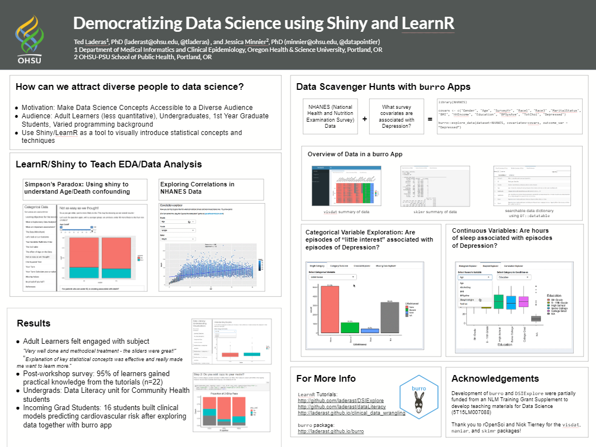
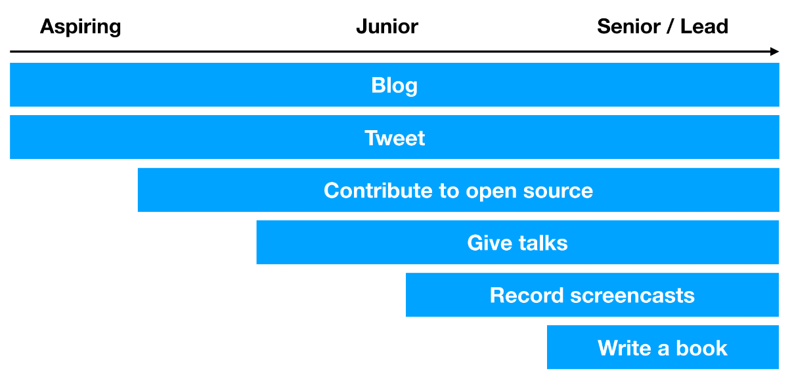

knitr::include_graphics("poster_laderast.png")
knitr::include_graphics("poster_laderast.png")
Well, RStudio Conf 2019 has come and gone. I attended the main conference, starting with the poster session on wednesday and stayed through the tidyverse developer day on Saturday.
To say that the conference was inspiring was an understatement. So many talented people working on such interesting and inspiring packages! It made me excited again about doing data science and teaching data science.
This post is going to highlight the interesting talks about education and organizational management at the conference. There were lots of thought provoking talks and great resources about education. Here’s a link to the other resources, posters, and talks (thanks, Karl Broman!). There are a lot of new neat whiz bang features in RStudio, which I won’t cover, but are covered very well by others at Karl’s link above.
UPDATE: I’m adding links to the videos as subheadings that you can click on. I won’t embed these directly because there is often related material with the video.
There was much sharing of educational resources. I’ll talk about a few.
Carl Howe (Director of Education for RStudio) presented a number of resources that RStudio is providing for educational purposes. Their goal is to train the next million R users. Here are some of the RStudio based educational resources that might be useful for everyone.
RStudio Cloud is now available free for people who teach courses, who can send them a course syllabus to gain access. RStudio Cloud includes resources to make coursework publically or privately available, allows instructors to install default packages, and gives students an immediate way to start playing with R/RStudio. We are definitely going to use this in teaching our BMI 569/669 Data Analytics course. Mel Gregory’s talk was about the nuts and bolts of using RStudio Cloud in a classroom situation. Highly recommended to get familiar with the basics.
Mine Çetinkaya-Rundel also has a Data Science In a Box course available that can be forked and used by anyone. There is a great discussion of how to use the course and the tech stack (RStudio Cloud, GitHub, and Slack) needed to make the course runnable.
There are also a number of LearnR Tutorials built into RStudio Cloud called RStudio Primers that cover a lot of basic RStudio operations for the self-directed learners.
Jessica Minnier and I presented at the poster session about our LearnR tutorials, DSIExplore and dataLiteracyTutorial and our burro package, which lets users explore a new dataset with a simplified Shiny App. There’s even a function that lets you build a shiny app from a dataset that you can publish to a Shiny server such as shinyapps.io or RStudio Connect for sharing and having a data scavenger hunt together. Or as Angela Bassa calls it, an EDA Party. Whoo!
I really loved Irene Stevens’ talk about Teaching Data Science Using Puzzles. Irene and Jenny Bryan put together a simple project-based framework that lets students download simple data wrangling puzzles per week, lets them submit their answer to an answer server and get feedback, and when they solve it, it creates a minimal reproducible example (reprex) to share with their puzzle community. Very Slick!
Kelly Bodwin gave a presentation of how she used Shiny apps as an intermediate step as part of an approach to teaching introductory statistics. Kelly is of the opinion that coding is good even for non majors, and her Shiny apps provide an intermediate step between a more click-based app and coding, asking the students to input their variables, their hypothesis, and highlights the output that results. I really liked this approach. I also really loved this slide:

I really enjoyed Jesse Mostipak’s talk about her data science journey starting the R For Data Science (R4DS) learning community. She especially emphasized that data science was her path out of lower incomes and that she thought it needs to be more accessible to all. She talked about the barriers to going from “Using your computer for Netflix” to “Using your computer for data science” as real, and what she learned as a community manager for the R4DS learning community. Finally, she ended with a call for data scientists to share their mistakes, in order to model that making mistakes is ok.
Speaking of mistakes, Caitlin Hudon gave a talk called “Learning from Eight Years of Data Science Mistakes”, which was really helpful. One of her messages was that “Mistakes count as experience”, and learning from past mistakes is extremely helpful for the whole team. However, it must be safe for team members to share their mistakes, and so creating the right culture of respect and teaching is important. This includes documentation, and including pseudocode next to the actual code to talk non-data scientists through is important. Likewise, making sure that you are solving the correct business problem requires communication. I really liked her discussion of the Rhetorical Triangle as a way to frame communications: Speaker, Audience, and Context.
Tracy Teal from Data Carpentries also talked about their efforts to Teaching R using inclusive pedagogy, including fostering a growth mindset. Their instructor training is a wonderful 2-day crash course in teaching, and I’m going to propose that it be offered to our graduate students to prep them for teaching. (Full disclosure: I’ve contributed to these course materials.) I also appreciated how candid she was about how much further they need to go to increase the diversity of participants.
Diversity and Inclusiveness was also a theme of Angela Bassa’s talk about Team Data Science. She pointed out that data science teams need to be diverse to serve audiences who are highly diverse.
A really interesting talk for me was Mary Rudis’ talk about her work teaching data science at the community college level. As head of the math department at Penn State Harrisburg, Mary has done a lot of work developing the first data science certification at the community college level. There are a lot more people attending community college than 4 year colleges, and we need to make paths to data science accessible for these students.
A lot more work needs to be done to make data science accessible at this level. Mary has pointed out a number of efforts that need help, including StatPREP and the American Mathematical Association of Two Year Colleges. She also ended with a call for Shiny Developers to help Community College instructors develop tools they can use to teach data science.
Organizational considerations were also a really interesting part of RStudio Conf for me. Joe Cheng’s keynote on Shiny in Production spent some time talking about overcoming resistance to Shiny in your organization, including talking with Data Engineers and IT Security. His point was that oftentimes, resistance comes from the feelings of territorialism and how to overcome them. Tonya Filz also gave a talk about being a Resilient R Champion at your organization, stressing these issues and giving us case studies/examples to show leaders at your organization.
Hilary Parker’s talk about Creativity and Data Science in the Organization, about applying system design principles to data science. Rather than thinking of ourselves as having a traditional role at the end of the analysis, Hilary suggested that we partipate in all parts of the process, including data collection. Her group suggested a change in an app, which resulted in a brand new data stream for them to analyse.
Angela Bassa’s Talk about Team Data Science talked about the organizational aspects of making a data team, including specializing roles, making sure that knowledge and expertise was distributed, and managing burnout by making sure that no one team member is overloaded. She stressed resilience within a team by making sure that people are taking care of themselves, having redundancy in the team. Process is also important, by making sure data is well documented, by allotting time. She also stressed the importance of young and new data scientists to the team, because they aren’t biased with previous knowledge. I also thought she had excellent arguments about the cost of not expanding your data team - potential users who would be lost.
I really enjoyed the final panel discussion, which was about encouraging a Growth Mindset for Data Scientists in their careers. Karthik Ram, Tracy Teal, Angela Bassa, and Hilary Parker all fielded questions about growing as a data scientist. One of my favorite remarks was from Tracy Teal, who mused about the possibility of a Leadership Carpentry, teaching potential leaders essential skills such as mentoring, faciliation skills, and valuing team contributions. Angela Bassa also had a great quote that “leadership is programming people”. She also pointed out that the role of Data Scientists is to “Question Dogma” and pointed out the importance of saying “I don’t know”.

The growth mindset was also a theme of Dave Robinson’s Keynote, which was about making your data science work public at a number of levels. He outlined a number of different types of public contributions, such as short form (tweets, discussions about data), long form (blogs), code contributions, and even writing a book.
Felienne Hermans gave a wonderful keynote about teaching computer programming. I won’t crib her story, because her telling it was a delightful journey and I encourage you to watch it for yourself at the link above. Part of her point was that programming pedagogy is dominated by the “tyranny of fun”, rather than focusing on teaching fundamentals. One of the problems with programming education is that we haven’t defined what these fundamentals are, compared to the pedagogy of reading, which talks about teaching with fundamentals such as phonics.
We expect students to explore things without teaching them enough, and that actually hurts their progress. Instead, we should also be teaching fundamentals, such as code reading out loud and rote memorization of programming patterns. By utilizing these fundamentals, she has found improved learning outcomes. As she says, motivation comes from seeing progress, not necessarily from exploration alone. Her results on using direct instruction have showed improved outcomes in terms of motivation.
I have to admit that this talk really opened my eyes to the blind spots we have in programming education. Looking forward to incorporating these ideas in my coursework.
So that’s my summary about the education and organizational talks/posters at RStudio Conf. Hopefully it gives you an idea of what resources, opportunities, and pedagogy is out there.
@online{laderas2019,
author = {Ted Laderas},
title = {Rstudio {Conf} 2019: {Education} and {Organizations}},
date = {2019-01-24},
url = {https://laderast.github.io//posts/2019-01-24-rstudio-conf-2019-education-and-organizations},
langid = {en}
}